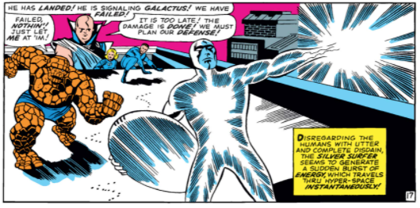
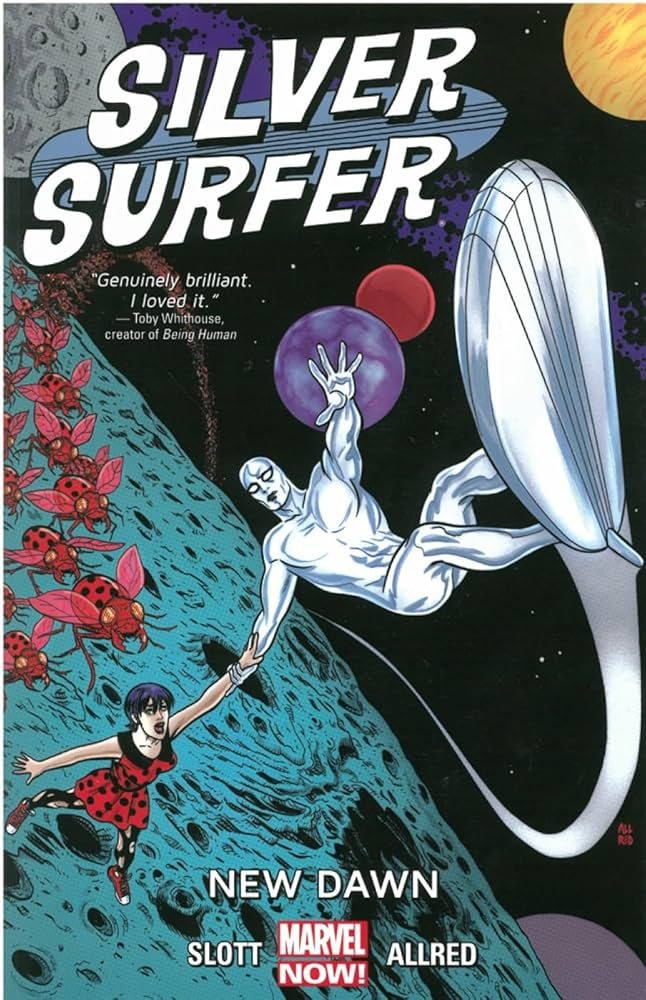
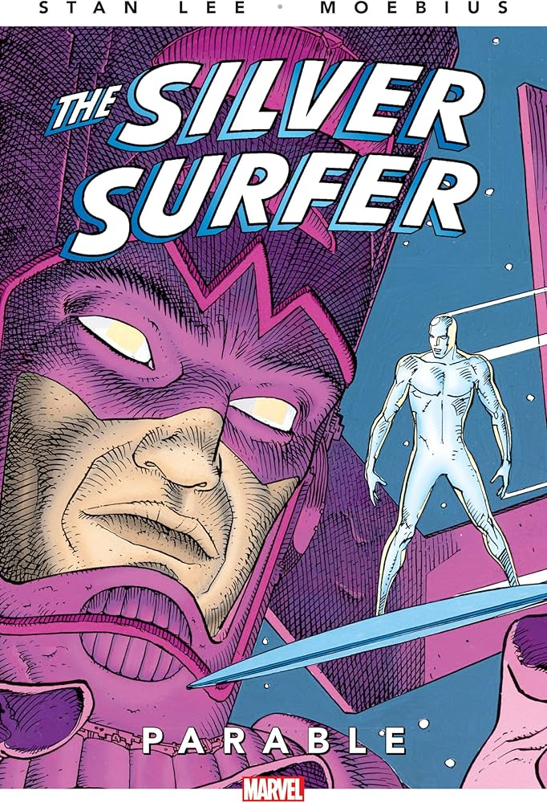
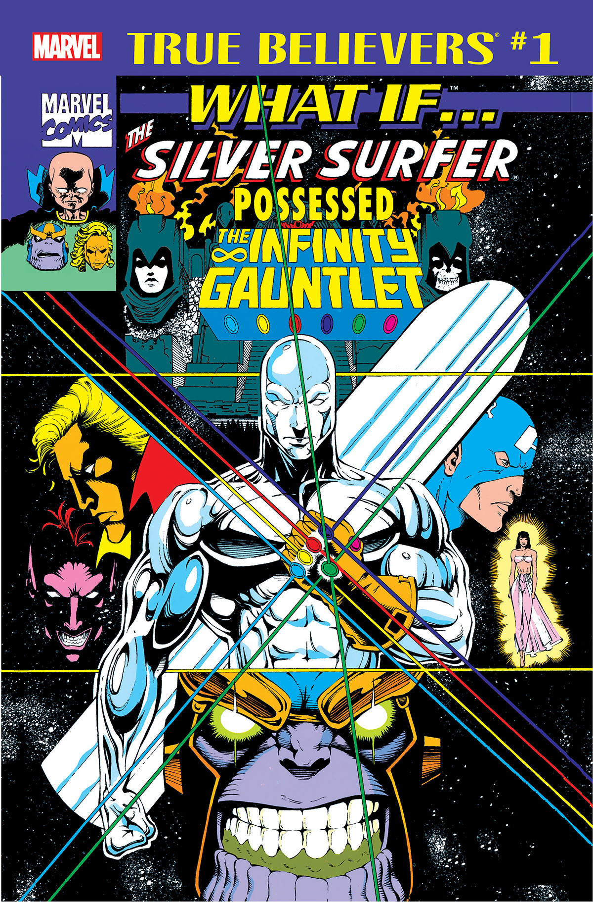
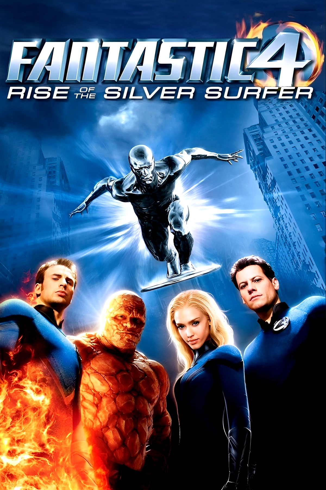
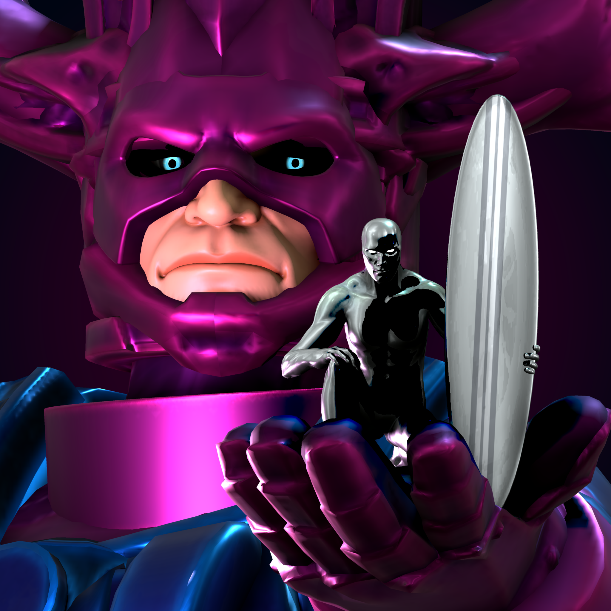
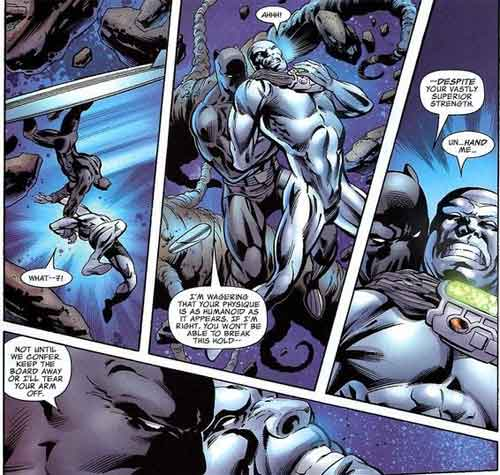
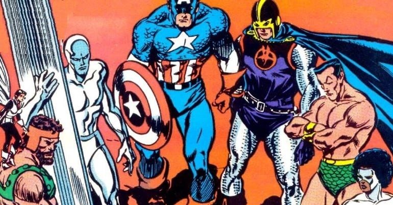

O Arauto de Galactus
Explorar o CosmosEm Zenn-La, um mundo de paz e conhecimento absoluto, vivia Norrin Radd um jovem astrônomo inquieto, sedento por algo além da perfeição entorpecente de sua civilização. Enquanto seu povo havia erradicado guerra, doença e desejo, Norrin ainda sonhava com o desconhecido.
Quando Galactus, um ser cósmico de poder inconcebível se aproximou de Zenn-La para consumi-la, Norrin tomou a decisão mais aterrorizante de sua vida: voar até o próprio deus do cosmos e fazer uma oferta. Servir como seu arauto para sempre, em troca da sobrevivência de seu povo e de sua amada Shalla-Bal.
Galactus aceitou. Ele revestiu Norrin com o Poder Cósmico, uma energia primordial que transformou sua carne em metal prateado e vivo. A prancha cósmica foi forjada para guiá-lo pelas estrelas, respondendo ao seu pensamento como extensão de sua própria alma. Assim nasceu o Surfista Prateado.
O Poder Cósmico é energia sem fim — a mesma força que moldou o universo nas mãos de Galactus, agora carregada por um único ser de carne e metal prateado.
Uma lenda que atravessa décadas e universos

1966A primeira aparição do Surfista Prateado, criado por Jack Kirby. Ele chega à Terra como arauto de Galactus na aclamada saga "Galactus Trilogy".

1968Primeira série solo. Exilado na Terra, Norrin Radd reflete sobre humanidade e liberdade.

1987Obra de Stan Lee e Moebius. Um conto filosófico sobre fé e o preço da adoração, obra-prima do medium.

1991O primeiro a avisar os heróis sobre Thanos e a Manopla do Infinito quase roubando o artefato.

2007Aparição nas telonas. Interpretado por Doug Jones com voz de Laurence Fishburne.
Com o Quarteto Fantástico chegando ao MCU, o Surfista Prateado retorna ao cinema prometendo redefinir o cosmos da Marvel.

LegadoO mais poderoso dentre todos os arautos o único que desafiou seu mestre por amor à humanidade.

CuriosidadeEm uma das cenas de combate mais controversas e lembradas pelos fãs, o Surfista Prateado, um ser de poder cósmico, foi derrotado de forma surpreendente por T'Challa.

AtemporalLutou ao lado dos Vingadores, X-Men e Guardiões da Galáxia ao longo de décadas.
O Arauto prateado mais temido da galáxia